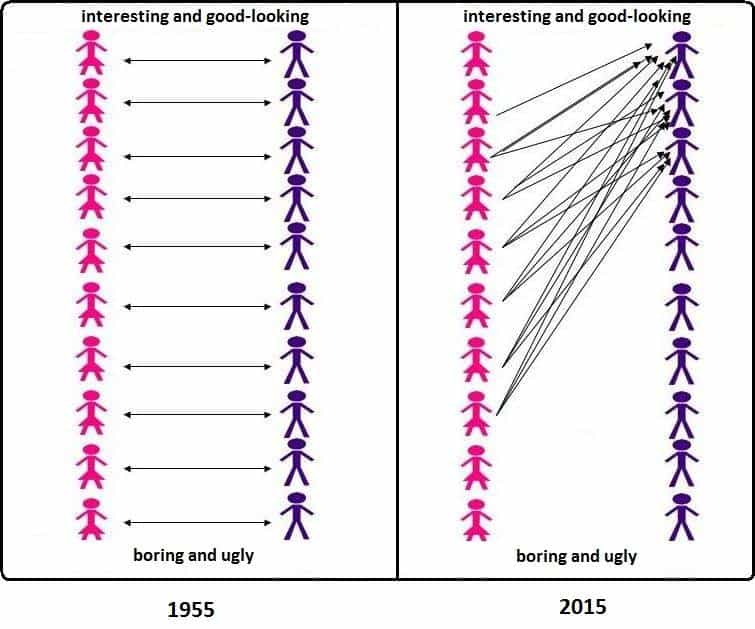

Corey is an iconoclast and the author of 'Man's Fight for Existence'. He believes that the key to life is for men to honour their primal nature. Visit his new website at primalexistence.com


Here at ROK one of the main topic we discuss is the damaging effects of feminism and the degenerate cultures that it has spawned. But what if there is another factor that has been largely overlooked? What if it is the material conditions that is having a profound influence on the cultural trends that we witness today?
My hypothesis here is that the 1:1 sex ratio we see today is abnormal compared to what was the norm throughout human existence, and that this excess of male population, in addition to the breakdown of the traditional order, is what is driving the numerous socio-sexual problems we witness today.

First, we must realize that the equal number of men and women that we are familiar with is not what our ancestors had lived through. We accept the current sex ratio and monogamy as being normal because that’s all that we’ve experienced, but recent DNA studies have shown that women always outnumbered men throughout history. Another study into our ancestral roots revealed that around 80% of women reproduced while only 40% of men did, with others even suggesting a reproduction ratio of four to five females per one male and even 17 females per one male. We should also note that these numbers only represent an average; the historical sex ratio was most likely skewed to favor even larger number of females for higher status men.
So how was this possible? We could get some clues by looking at our primate cousins who frequently fight one another and drive out or kill competing males for sexual access. I believe such social norms were no different for our Stone Age forefathers, ensuring that only the strongest of men reproduced. Even with the advent of civilization, we know that countless number of men were killed in battles that raged across the globe, which laid the foundation for establishing a patriarchal culture. Even without wars, many men died from hunting, exploring, laboring, and so on. I still remember Quintus’s article that mentioned a small native tribe in Greenland where there were only ten men for 31 women because the other men perished from their hunting and fishing expeditions.
The male population likely only reached similar numbers as the female population during prolonged peace (which in turn led to decadence and collapse). And the world as a whole rapidly reached almost universal equal sex ratios in the decades following WWII, which—along with the introduction of women into the workplace and the invention of modern contraceptions—gave rise to modern feminism.
From this article.
When you have too much of something, its value decreases; you don’t even need Economics 101 to understand that fact. As we’ve established that one-to-one sex ratio is an aberration unseen in human history until recent times, it becomes easier to understand all the current problems regarding the sexes in the modern world.
But of course, the material condition of sex ratio itself is not the only problem. The other major factors that disrupt healthy male-female relationships are:
But in spite of the various other factors, I would argue that the sheer number of men is what is causing the most disruption in the sexual marketplace
If you’re still in doubt that it’s the sex ratio, you should check out the social problems in traditional countries like China and India where they have millions of more men than women. Inversely, this also explains why Ukrainian and Russian women are feminine and eager to find a man they will please as their nations suffer from shortage of men (again, I acknowledge that there are other factors involved including social norms and individual economic situation).

Even if the male population is a major factor, there is one other factor that has been effective in keeping the male-female relationship stable: traditional and patriarchal cultural values.
As we no longer live in a tribal order, we need to guarantee social stability by ensuring that women don’t spoil themselves by sleeping with whatever man ignites their passions or for powerful men to hoard all the women and leave the rest of the men frustrated, causing perpetual conflicts. Instead, a rule was established so that women’s sexual behavior was controlled while each man in every strata had a chance to start a family with a woman of matching value, giving impetus for them to work, thereby ensuring the society to prosper (indeed, there are people who insist that monogamy was the key factor to Western civilization’s rise to prominence). But it seems that the West’s greatest strength, it’s penchant for progress, ultimately led to its demise as the so-called progress broke down the traditional order and unleashed a new age of feminist gynocracy.
It was in the face of this social situation that Game was developed to give men a chance to experience more abundant sex life and to secure better relationships. And if you look at the principles of Game, you’ll realize that most of it is just a way of addressing the issues caused by the overflowing number of males to compete with. Whether it be the use of abundance mindset, numbers game, peacocking, as well as the numerous ways to appear as the Alpha male by working out, dressing well, and adopting dominant body language, you’re trying your best to stand out and be in the top 5% just to experience normal sexual relationships (whatever the traditionalists might say, men are hard-wired to be promiscuous; “holy” union is just an ideal). It’s highly doubtful that men in the past put in this much effort just to attract women and I imagine that relationships grew much more naturally back then.
Now, there are certain men in the corners manosphere who scream about the evils of “hypergamy.” But you see, hypergamy itself isn’t the problem. Expecting women not to be hypergamous would be like expecting men to get turned on by a 270lb ogre of a woman with dried ovaries. The issue then, is not hypergamy, but the conditions that make hypergamy excessive and therefore harmful to society—namely, the equal number of men to women.
Other issues, including the diminishing quality of Western women and their ability to be mothers, and the fact that they’re now more likely to delay or put off marriage for their careers, all exacerbate the problem to a another level.
The myriad of consequences of imbalanced sexual market value as a result of excess of men are all already familiar to us:
The dysfunctional sex ratio also explains the phenomenon of herbivore men and MGTOW as the low-value men who would’ve otherwise been eliminated in the stone age continue living in the modern world and refuse to be drones for the womankind. The MGTOWs are painfully aware that they’re the bottom 20% of men likely to be genetic dead-ends. As a result, they have three choices: 1) Be depressed about being a low-value man who has no access to a decent woman. 2) Put in enormous amount of time, energy, and effort just to have a chance with a woman who is a 6 or less. 3) Reject women altogether so that your self-esteem isn’t hurt by not being able to have sex (while pretending not to be jealous of “PUA’s”). We all know which option they went with—and I don’t blame them.

Masculine energy needs to be re-channeled to alternative outlets like video games, movies, and sports so that men don’t ever wake up.
In addition, I would argue that the Western society’s efforts to systematically repress masculinity using various entertainments and institutions represents an effort to tame the excessive aggressive and sexual energies of men that can blow up anytime. Men need to be emasculated for the system to thrive. Modern societies simply cannot afford to have all men living with normal levels of testosterone; because if they do, civilization as we know it would cease to function and governments and corporations wouldn’t be able to control and exploit men like they do now (through patriotism and consumerism of male-oriented products).
If you want to learn more about the effects of having a large number of young men without giving them economic or sexual prospects, read this eye-opening interview with Dr. Hedegaard, a German sociologist who warns of the demographic time-bomb in Europe.

To conclude, I would say that the consequences of having equal number of men and women are far greater than what most people imagine. But at the same time, it is something no one wants to talk about or acknowledge for it would lead to the inevitable conclusion which nobody wants to confront: that there’s too many of us.
I’m not here to suggest any solutions—I’ve previously had losers accusing me of advocating gendercide for saying similar things (I guess they’re aware that they would be the first to be naturally selected), but until the issue of sex ratio is addressed, any talk of reversing the culture back to traditional order or “defeating” feminism is as futile as paddling against the current. Unless we’re both willing and able to enforce authoritarian patriarchal standards seen only in places like Saudi Arabia (an extremely unlikely scenario in the West), or should a major war or a revolution break out, feminism is likely here to stay.
In a way, you could say that feminism is the price we must pay for living in peaceful conditions where we don’t have to risk our lives to fight for our tribes as men were meant to.
Read More: Women Who Don’t Reproduce Hurt Society